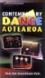

|
Contemporary Dance Aotearoa: Three New Zealand Dance Works
This
video resource is for year 11–13 students who are preparing for
the external NCEA examinations in dance. Students can view and interpret
a variety of performances and gain insights into how the performances
were developed. Interviews with the choreographers will help students
to understand the contexts of the dances and the choreographic process.
Performances include:
- Mauri, choreographed by Stephen Bradshaw and performed by Atamira
- This Way Up, choreographed by Catherine Chappell and performed by Touch Compass
- Queen Camel, choreographed by Ann Dewey and performed by Spinning Sun.
See www.tki.org.nz/r/dance/contemporary
for teachers' notes, including practical and written activities
that can be used to prepare students for the externally assessed
NCEA Dance Achievement Standards at levels 1, 2, and 3.
One copy of the video was distributed in July to every school
with year 11–13 students. Additional copies may be purchased at
the education price of $12.00. Item 30560 orders@learning
media.co.nz
Give It a Whirl: Exploring New Zealand's Rock Music
Give
It a Whirl, the television series on New Zealand rock music, is
now available on video and DVD for use with students in years 9–13.
The six-episode series tracks the development of New Zealand popular
music from the 1950s to today. There are general activities for
each episode and further activities for featured songs, which allow
students to examine the music of the time in more depth. The teachers'
book also includes biographical information about the artists and
references for further research.
Copies of this kit have been distributed on the basis of roll size to schools
with year 9–13 students. Additional copies of the kit can be purchased
for the education price of $95.00. Item 30710 orders@learning
media.co.nz
|